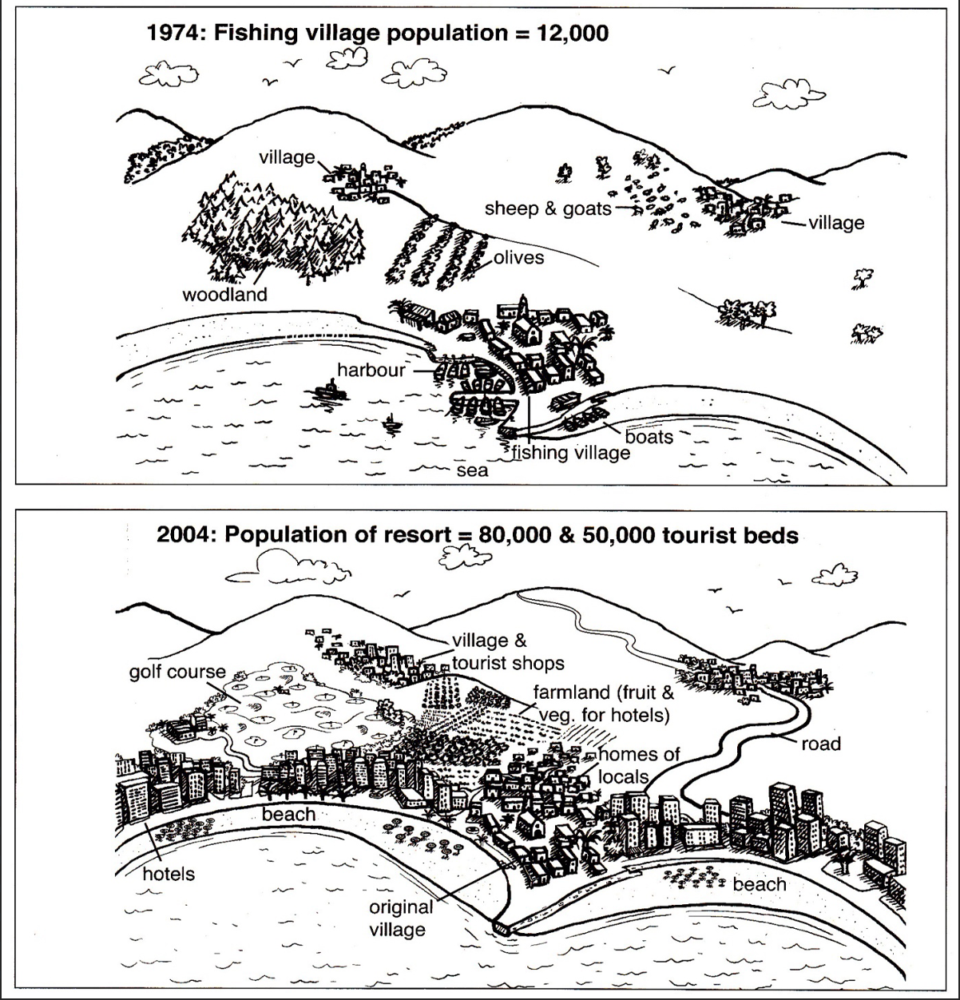

You should spend about 20 minutes on this task.
The diagrams below show the development of a small fishing village and its
surrounding area into a large European tourist resort.
Summarise the information by selecting and reporting the features, and make
comparisons where relevant.
Write at least 150 words.

Word Count: 0
You should spend about 40 minutes on this task.
Write about the following topic:
Music is played in every society and culture in the world today.
Some people think that music brings only benefits to individuals and societies.
Others, however, think that music can have a negative influence on
both.
Discuss both these views and give your own opinion.
Give reasons for your answer and include any relevant examples from your own
knowledge or experience.
Write at least 250 words.
Word Count: 0